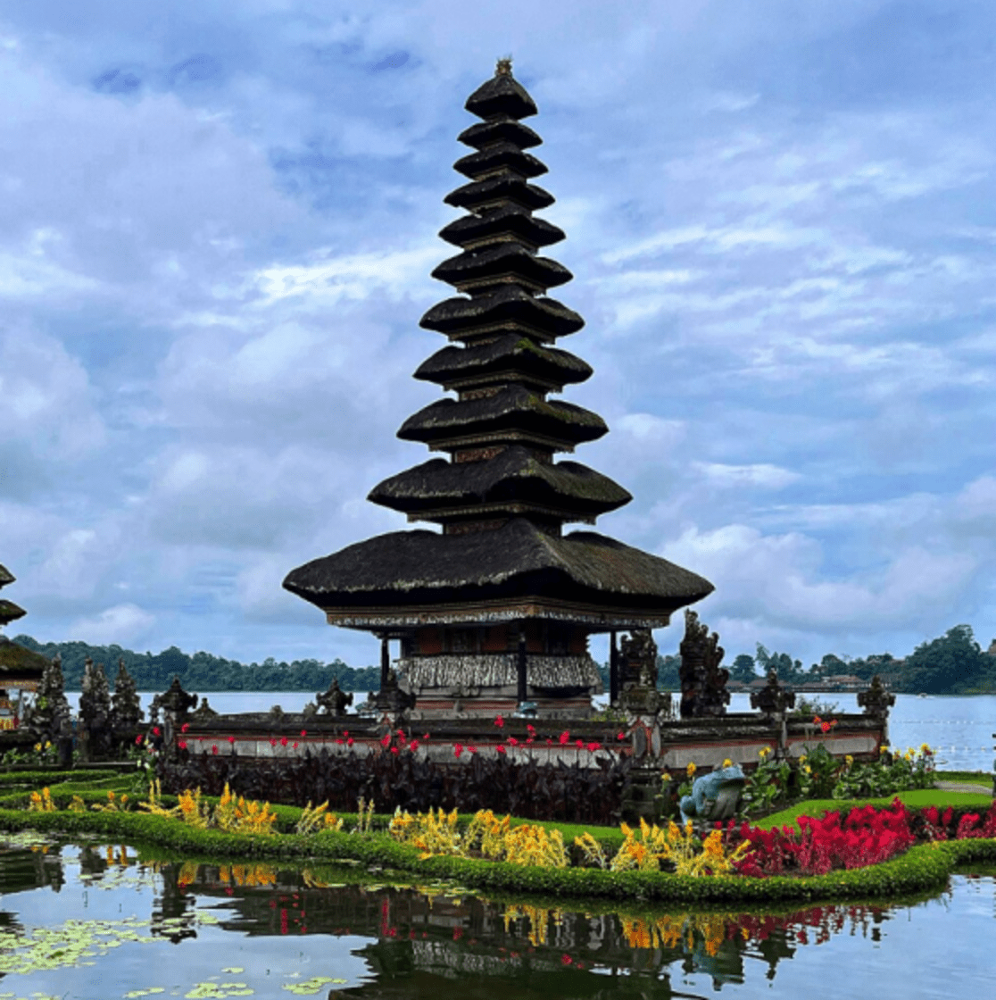
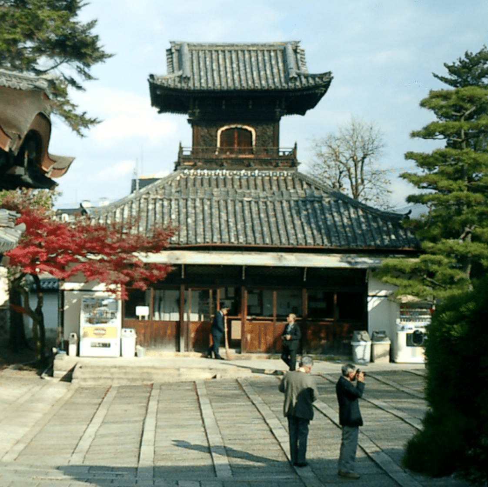
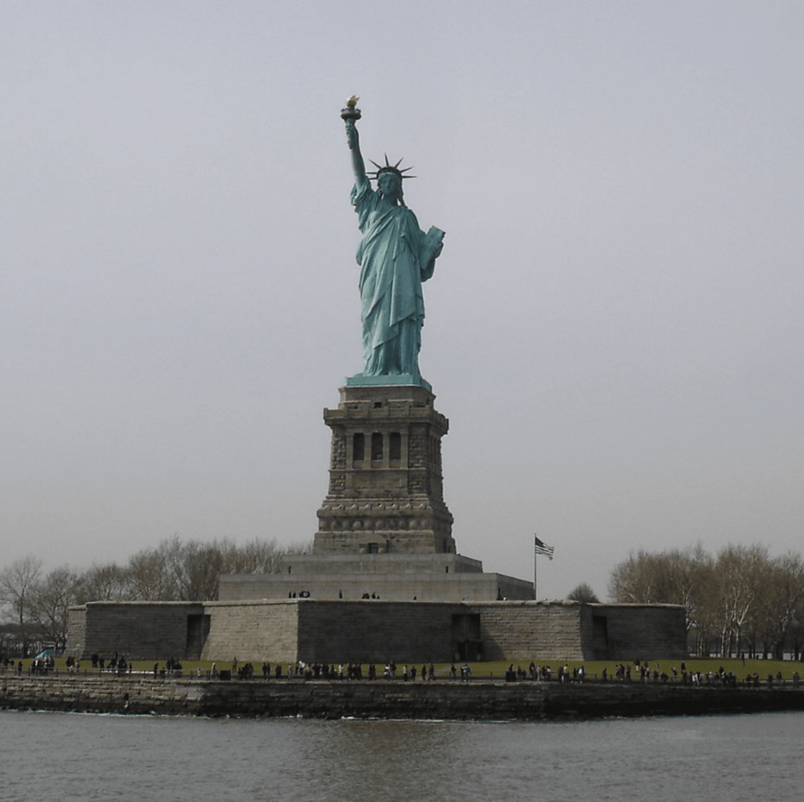
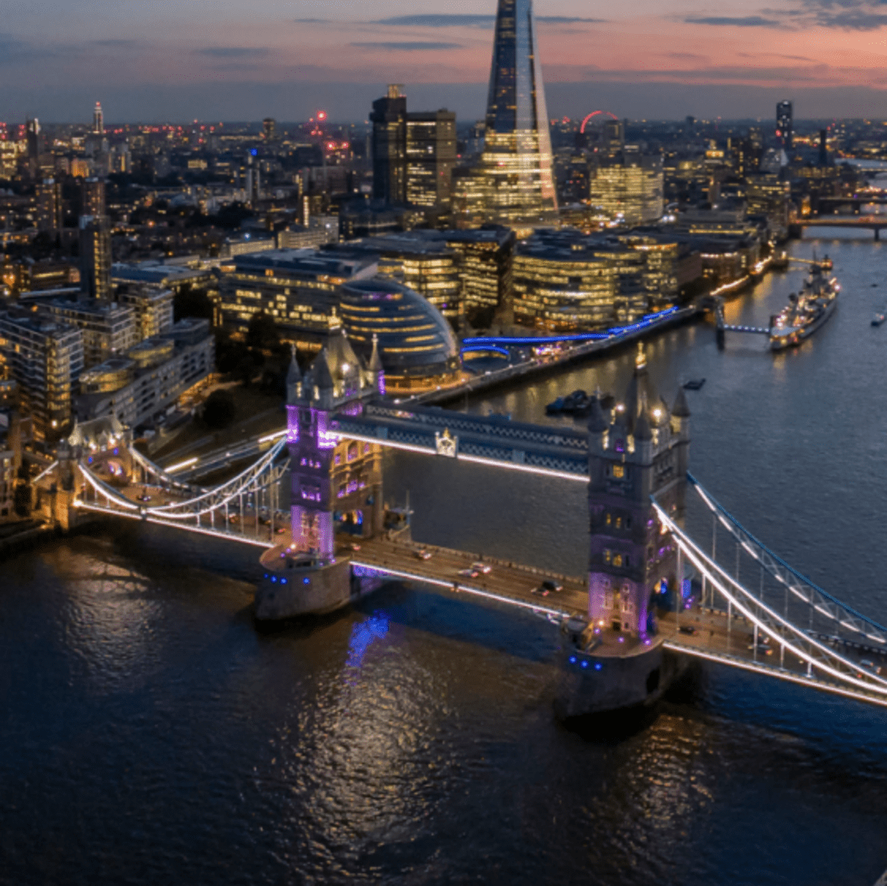
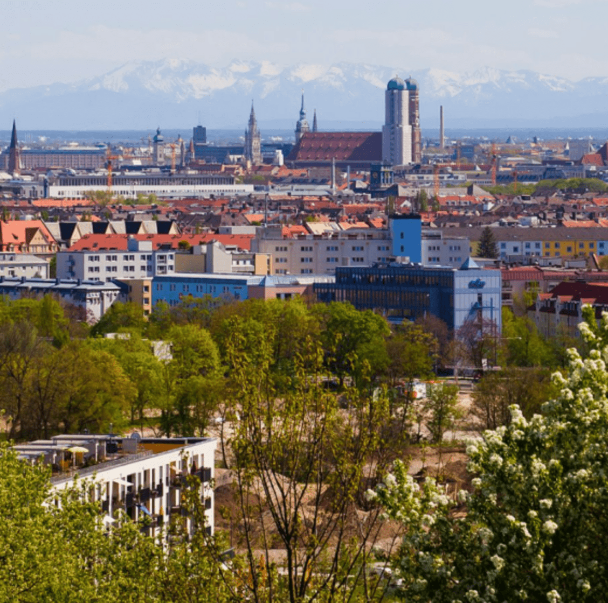
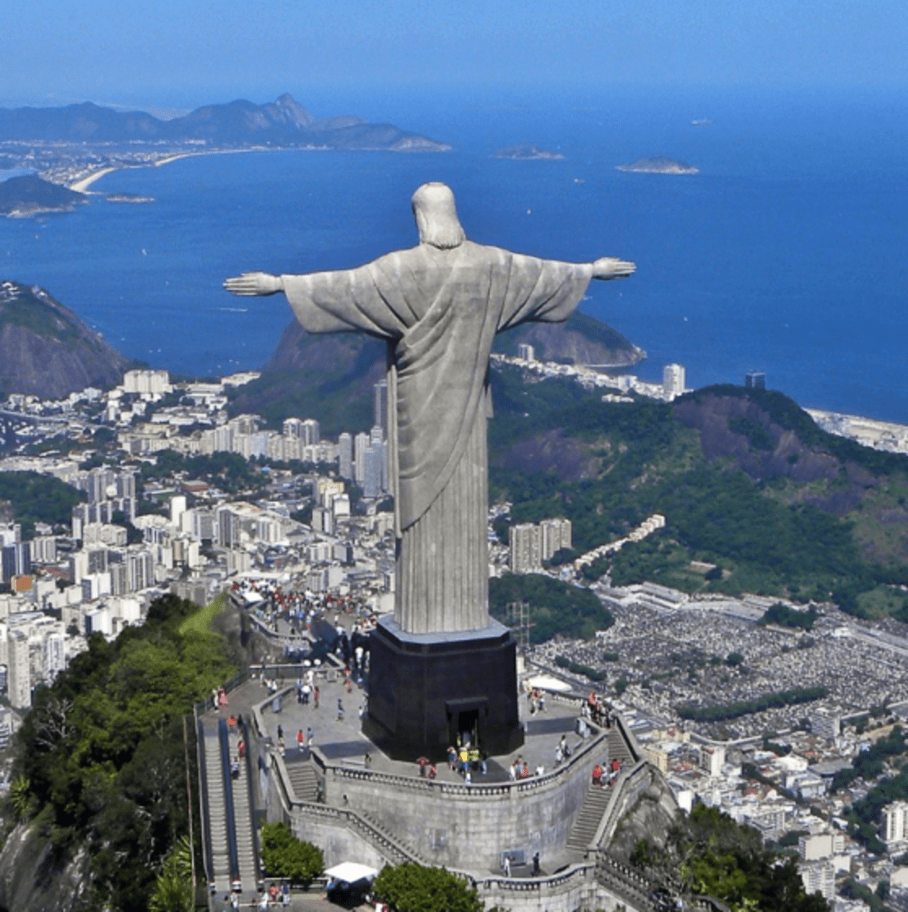

Current Weather
Popular Destinations
Experience the romantic charm of Paris with its iconic Eiffel Tower, world-class museums, and exquisite cuisine.
Bali, Indonesia Discover the tropical paradise of Bali, known for its lush landscapes, vibrant culture, and stunning beaches.
Kyoto, Japan Explore the historical beauty of Kyoto with its ancient temples, beautiful gardens, and traditional tea houses.
New York, USA Experience the bustling energy of New York City, home to iconic landmarks, diverse neighborhoods, and world-famous arts and entertainment.
London, UK Enjoy the rich history and vibrant culture of London, with its renowned museums, historical sites, and charming parks.
Munich, Germany Discover the Bavarian charm of Munich, famous for its beer gardens, festive atmosphere, and beautiful architecture.
Mount Everest, NepalEmbark on an adventure to Mount Everest, the highest peak in the world, offering breathtaking views and challenging treks.
Rio de Janeiro, Brazil Immerse yourself in the vibrant culture of Rio de Janeiro, known for its stunning beaches, lively festivals, and iconic Christ the Redeemer statue.
Travel Tips
Pack light and smart. Bring only what you need and make sure to pack versatile clothing.
Always carry a power bank. Keeping your devices charged is crucial for navigation and communication.
Learn basic phrases of the local language. This can help you immensely in daily interactions and emergencies.
Keep a digital and physical copy of your travel documents. Backup copies can save you in case of loss or theft.
Research the local customs and etiquette. Understanding cultural norms can enhance your travel experience and prevent misunderstandings.
Stay hydrated and eat healthily. Keeping yourself well-nourished and hydrated is essential, especially in different climates.
Be aware of your surroundings. Stay alert and keep your belongings secure to avoid any issues during your trip.